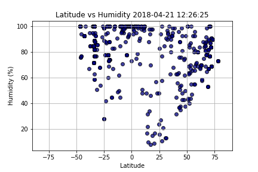

Humidity

With good reason, the humidity has a greater chance of being low closer to the equator. This effect is due to the large land masses and higher temperatures observed near the equator.
With good reason, the humidity has a greater chance of being low closer to the equator. This effect is due to the large land masses and higher temperatures observed near the equator.